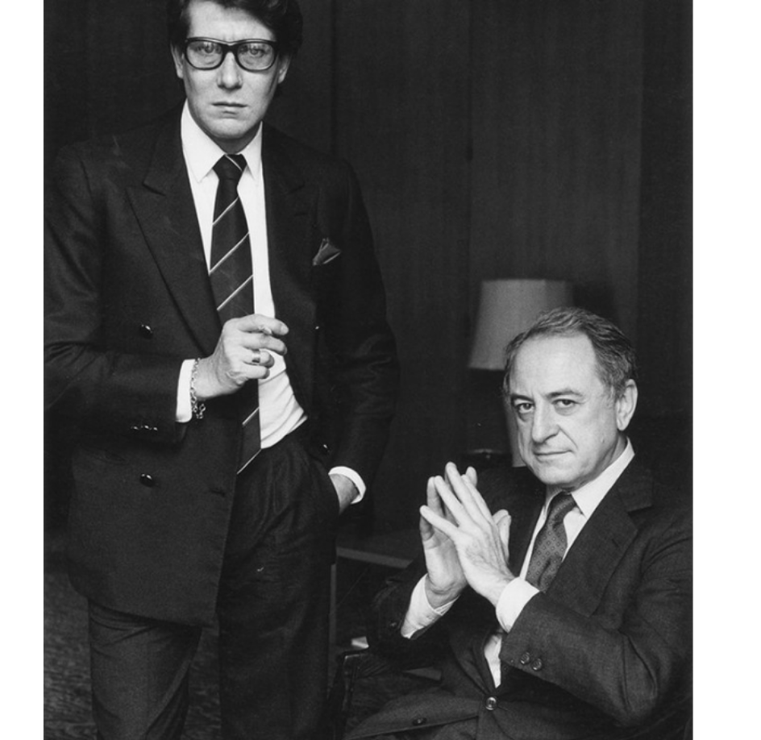
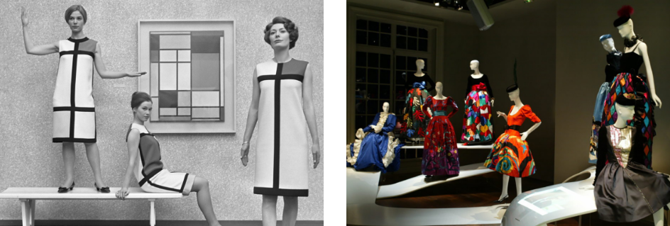
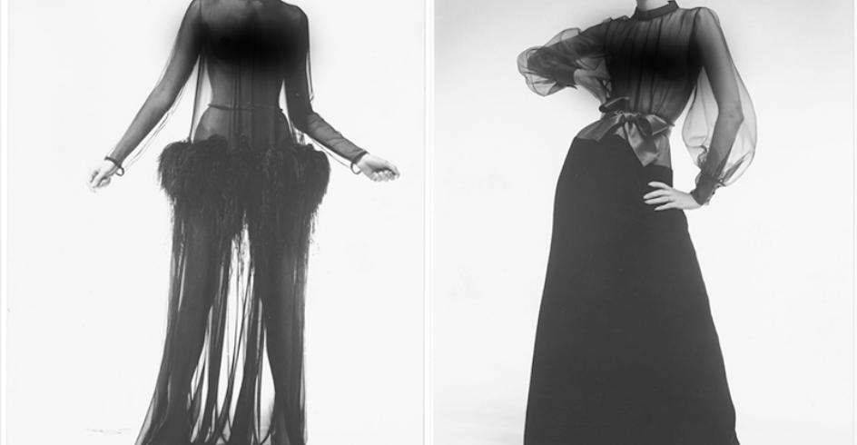

이브 생 로랑은 디올의 첫 번째 컬렉션에서 성공적인 데뷔 무대를 펼치지만 점차 디올의 주 고객인 보수적인 상류층 중년들이 추구하는 보수적인 패션에 지루함을 느낀다.
그래서 당시에는 매우 파격적이고 다소 개방적인 패션 디자인을 선보이게 된다. 젊은 사람들은 그의 디자인을 좋아했지만 디올의 주 고객들은 이브 생 로랑이 제안한 디자인에 대해 부정적인 시각이 많았다.
결국 디올의 소유주였던 마르셀 부삭은 그에게 군입대를 권하게 된다. 이브 생 로랑은 군입대를 하지만 3주 만에 신경 쇠약으로 정신병원에 입원하게 된다. 그런데 그 사이 새로운 수석 디자이너가 뽑혀 디올에서 해고되었다는 소식도 듣게 되었다.
좌절감과 우울에 빠져있던 이브 생 로랑을 도와주었던 한 사람이 있었는데, 바로 그의 연인 피에르 베르제이다. 피에르 베르제의 도움으로 인해 1961년 이브 생 로랑의 이름을 내걸은 ‘이브 생 로랑’ 브랜드를 론칭할 수 있었다.
이것이 생 로랑 브랜드의 시작이었다.생 로랑의 기원생 로랑은 1961년 프랑스 파리에서 론칭한 패션 브랜드이다.
생 로랑은 1960년대의 일반적 패션 형태였던 고급 맞춤복인 오트 쿠뛰르로 브랜드를 시작했으나 1966년대의 기성복 전문 브랜드 ‘리브 고시’를 선보이며 우아한 것이 전부엿던 당시 패션에 젊은 스트리트 감성을 도입했다.패션계에 새로운 역사를 쓰다- 예술과 패션의 만남1966년 이브 생 로랑은 니키 드 생 팔르와 앤디 워홀의 작품에서 영감을 받은 팝아트 컬렉션을 선보이기도 했다. 빨간 입술, 알록달록한 심장, 원색의 해와 달, 여성의 몸 등의 그림을 넣은 드레스는 니키 드 생 팔르의 조형작품 ‘블랙 비너스’와 앤디 워홀의 판화 시리즈를 떠오르게 했다. 1969년, 이브 생 로랑은 조각가 클로드 라란느와 협업하여 조젯 크레이프 소재로 만든 우아한 롱 드레스에 청동으로 형태를 딴 가슴 혹은 허리 조각 작품을 옷에 달았다. 이는 옷으로 감춰져야 하는 신체 부위가 조각을 통해 오히려 강조됨으로써 초현실적인 이미지를 만들었다.
1979년 가을, 겨울 시즌에 이브 생 로랑은 파블로 피카소 오마주 컬렉션을 선보였고 연이어 1980년 기욤 아폴리네트와 장 콕도, 1981년 앙리 마티스와 페르낭 레제, 1987년 데이비드 호크니, 1988년 조르주 브라크와 같은 예술가들의 작품을 컬렉션에 도입했다. 특히 1988년 빈센트 반 고흐의 해바라기 그림을 넣은 재킷은 자수의 대가인 장 프랑수아 르사주와 협업하여 만들었는데, 해바라기 문양에 35만개의 스팽글과 10만 개의 자개가 들어갔으며 수를 놓는 데 600여 시간이 소요되었다고 한다. 이런 이브 생 로랑의 행보는 마크 제이콥스 등의 후배 디자이너들이 예술 작품을 도입해 컬렉션을 만들도록 영감을 주었다.- 이국 문화에서 영감을 받은 컬렉션어린 시절을 남아프리카 오랑에서 보낸 이브 생 로랑은 아프리카 미술에도 관심이 많았다. 1967년 봄, 여름 컬렉션에서 이브 생 로랑은 아프리카의 밤바라 부족의 예술 작품과 민속 의상에서 영감을 받은 아프리칸 컬렉션을 선보였다. 이브 생 로랑은 아프리칸 컬렉션을 통해 오트 쿠튀르에서는 사용하지 않았던 소재인 조개껍데기, 나무 구슬, 동물의 이빨 모양 비즈 등을 사용했다.
더 나아가 1973년, 이브 생 로랑은 아프리카계 이만, 아시아계 티나 초우 등 다양한 문화적 백그라운드를 가진 모델을 기용하기도 했다. 고고한 오트 쿠튀르 무대에 흑인 모델을 세운 것은 이브 생 로랑이 최초였다.
1976년 이브 생 로랑은 오트 쿠튀르와 프레타 포르테 컬렉션을 통해 세르게이 디아길레프와 요하네스 베르메르의 그림 ‘진주귀고리를 한 소녀’에서 영감을 받아 러시안 룩을 선보이기도 했다. 이는 큰 호평을 받았고 이브 생 로랑도 자신의 컬렉션 중 이를 최고로 뽑았다고 한다.
1977년 7월에는 18세기 중국에서 영감을 받은 컬렉션을 선보이며 에스닉한 컬렉션 시리즈를 이어갔고, 이브 생 로랑의 영향으로 패션계에는 이국 취향이 유행하기 시작했다.- 여성 해방의 상징 시스루(See Through)1967년, 페미니스트들은 브래지어처럼 여성을 억압하는 속옷을 태워 버리자고 주장하며 여성 인권 신장의 목소리를 높였다. 이브 생 로랑은 더 나아가 1968년 1월에 브래지어를 하지 않은 채로 가슴이 다 비쳐 보이는 파격적인 시스루 룩을 선보였는데 페미니스트들은 이를 여성 해방의 상징처럼 여기며 환영했다.
당시 매우 과감한 디자인이었던 시스루 룩은 훗날 디자이너들에게 영감을 주는 중요한 모티프가 되었고 2010년을 전후해서는 연예인 뿐 아니라 일반인 사이에서도 매우 유행하여 일상적으로 착용하는 옷이 되었다.론칭~몬드리안 컬렉션 (1961~1965) 전성기~뉴욕 메트로폴리탄 박물관 회고전 개최 (1966~1984) 브랜드 매각~이브 생 로랑의 죽음 (1993~2008)